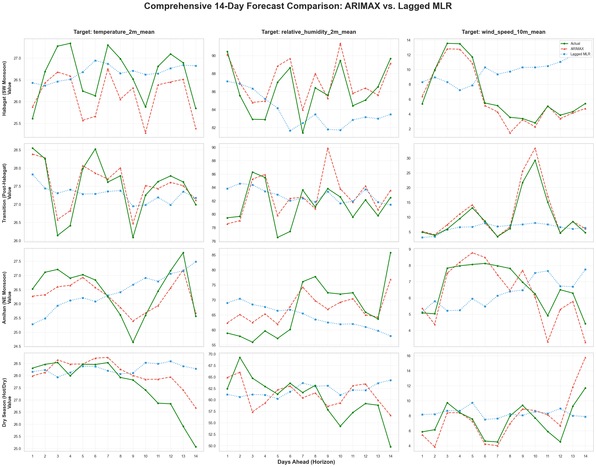
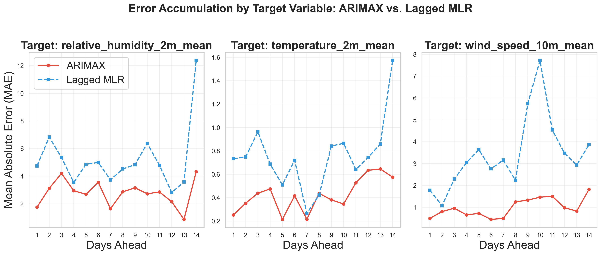

ABSTRACT
We compare two methods for predicting Manila's weather 14 days in advance. This study focused on forecasting three main variables: mean temperature, relative humidity, and mean wind speed. Using local weather data from January 2023 to March 2026, we tested a stochastic model against a deterministic model, ARIMAX and Lagged Multiple Linear Regression (LMLR), respectivelty. A comprehensive preprocessing steps was implemented, incorporating stationarity testing, first-order differencing, and Principal Component Analysis (PCA) to address multicollinearity and dimensionality. The dataset was also split into four local seasons: Habagat, Transition, Amihan, and Dry Season. In terms of forecasting strategy, ARIMAX predicted recursively while LMLR used a multi-step direct approach to keep errors from propagating over the 14 days. We evaluated the models using standard error metrics like RMSE and MAE, alongside statistical tests like the Diebold-Mariano test and the Paired Hotelling's T^2 test to check the accuracy of the entire 14-day forecast. Our results show that both models have different strengths and weaknesses depending on the season, highlighting the trade-offs between stochastic and deterministic forecasting.

The 12 plots in Figure 1, Actual vs ARIMAX vs LMLR, provide the final visual evidences of the study. In these plots, the ARIMAX model consistently tracks the fluctuations of the weather variables with higher fidelity than LMLR. Conversely, the LMLR predictions appear as a smoothed approximation of the seasonal mean, often lagging begind the rapid transitions' characteristics of the Manila climate pulses.

The mean absolute error (MAE) was average acrross the four seasonal folds and plotted against the lead time. As seen in Figure 2, the LMLR generally has a steeper error growth curve. The ARIMAX demonstrates superior error dampening compared to LMLR. The stocahstic Moving Average component allowed the ARIMAX model to self-correct, whereas the LMLR's direct approach shows a gradual separation from the actual atmospheric state as the 14-day limit approaches.